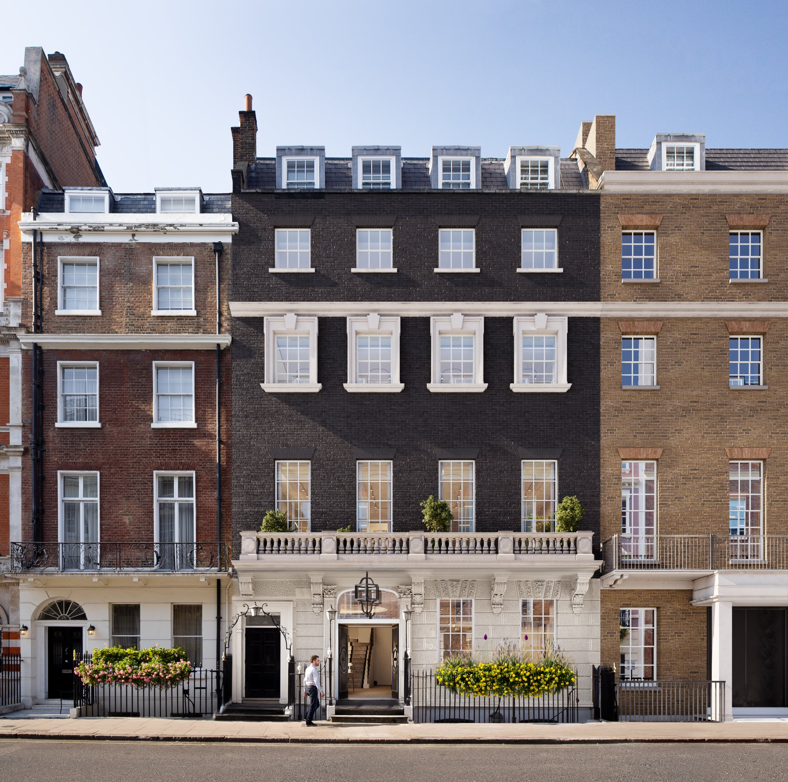
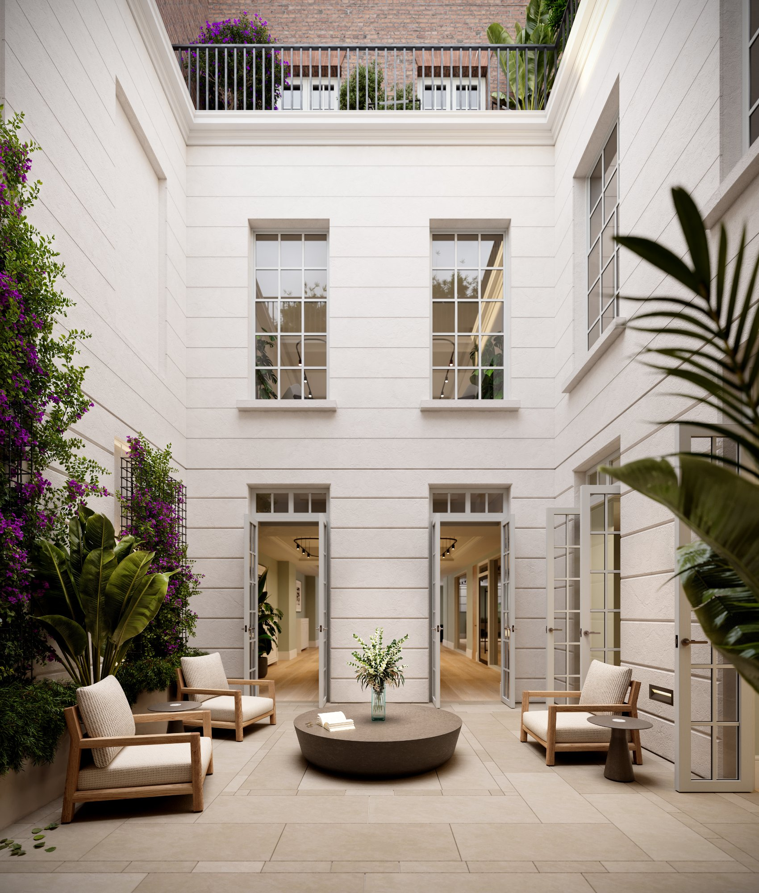
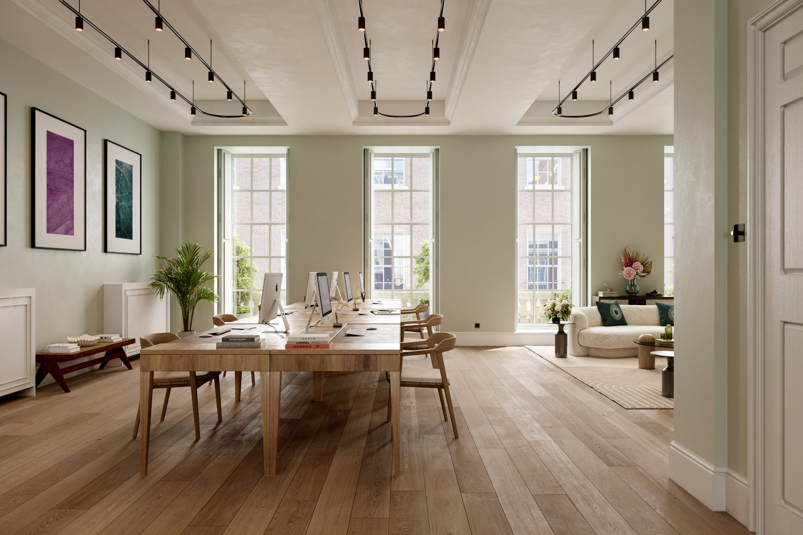
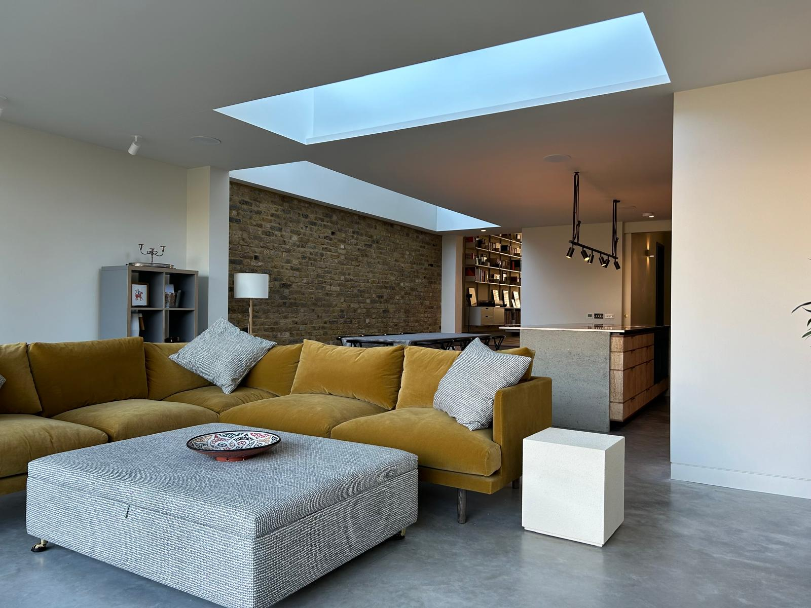
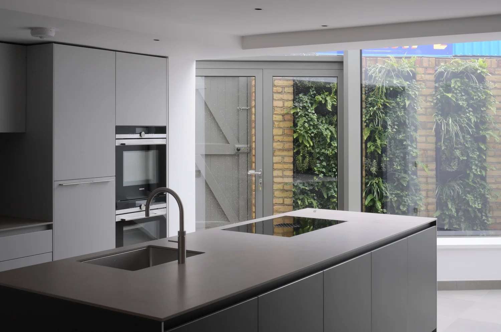
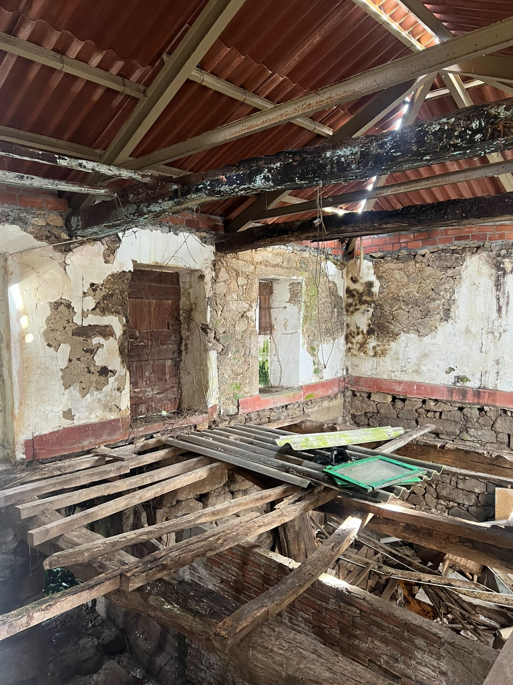
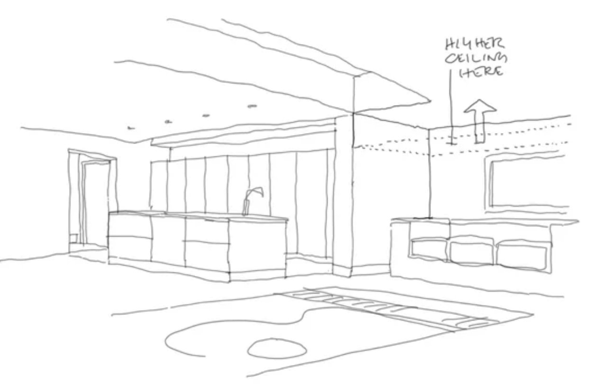
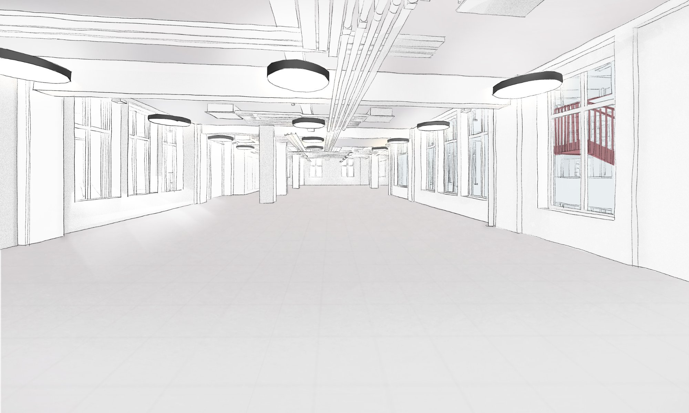
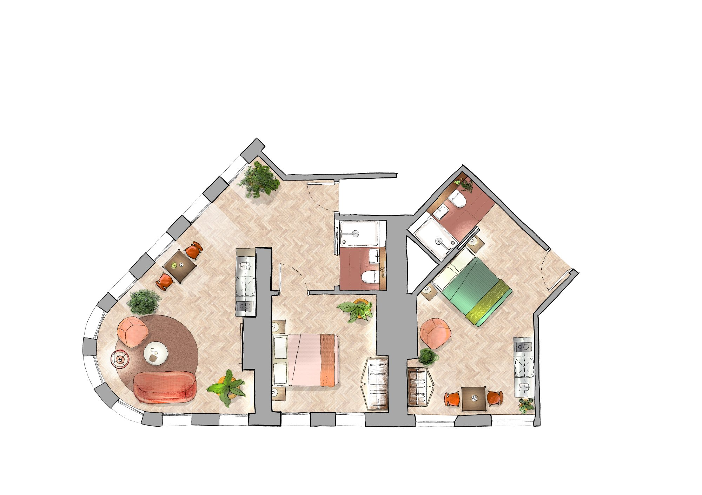
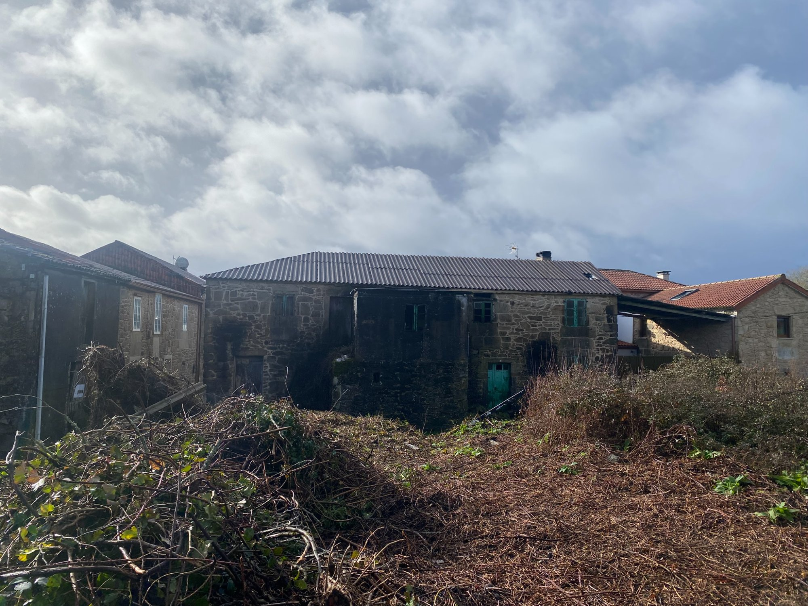

London Practice
Projects completed at Emrys Architects and Robert Barnes Architects, London







UK-trained architect based in Negreira — design, project management and pre-purchase consultancy for international buyers of rural properties across Galicia and Asturias.
Book a free call →All services delivered in English. Fixed fees agreed upfront.
Pre-Purchase
Independent structural and condition assessment before you commit. Written report in English covering risks, costs, and planning constraints.
From €350 — written report within 5 working days
Design
Feasibility studies, spatial planning, and design proposals tailored to Galician and Asturian rural typologies.
From €800 — feasibility to full design
On-Site
On-the-ground oversight of local contractors, budget control, and progress reporting in English — across Galicia and Asturias.
From €400/month — monthly retainer
Regulatory
Navigating Spanish licencia de obras, working with local aparejadores and partner architects for statutory sign-off.
From €500 — includes coordination with aparejador
Remote
Fixed-fee advisory for UK-based clients planning to buy, renovate, or manage a property in Galicia or Asturias — without needing to be on the ground. Calls, written reports, and ongoing support in English.
From £150 per session — fixed-fee packages available
Book a call →Why a UK architect in rural Spain?
International buyers face a double challenge: a language barrier and an unfamiliar building culture. I bridge both.
Most English-speaking architects are city-based. I live rurally in Negreira and operate across Galicia and Asturias.
I work with partner arquitectos for projects requiring Spanish statutory sign-off — British oversight with local compliance.
My own renovation of a rural stone house in Negreira gives me direct knowledge of local contractors, materials, and planning.
Projects completed at Emrys Architects and Robert Barnes Architects, London





From site investigation to physical modelling — design developed through drawing, making, and close observation.

Research
Analysis
Design
DetailA full rehabilitation of a derelict rural stone house in Negreira, Galicia. The project is both my own home and a live demonstration of the practice's approach to rural Galician architecture. Two-storey granite rubble masonry building, partially collapsed internally.

I'm a UK-trained and ARB-registered architect, now based in Negreira, Galicia. I spent a decade working in London practice before relocating to rural Galicia. My focus is the intersection that most architects in this region don't occupy: the needs of international buyers and owners navigating an unfamiliar building culture.
| Registration | ARB — Architects Registration Board, UK |
| Education | MArch, London Metropolitan University |
| Former practice | Emrys Architects, London |
| Former practice | Robert Barnes Architects, London |
| Based | Negreira, A Coruña, Galicia |
| Operating area | Galicia & Asturias |
| Languages | English · Spanish (working) |
Download the free Galicia Property Buyer's Checklist — 25 questions to ask before you make an offer, written by a UK architect based in Negreira.
No spam. Unsubscribe any time.
Whether you're assessing a property before purchase, planning a full renovation, or simply need independent advice — get in touch.
+44 7814 906078 Book a call →